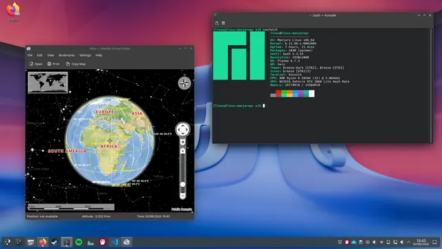
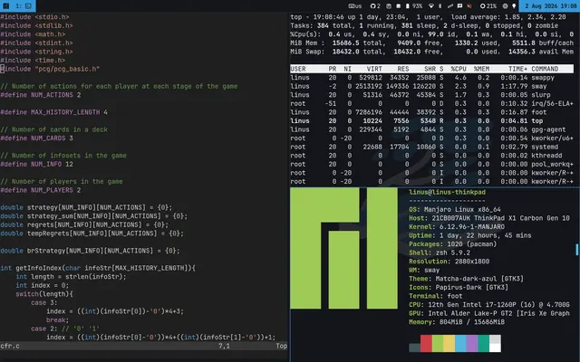

A curated list of the software and hardware I use on both machines. My general philosophy: prefer free and open-source software that's minimal, effective, and efficient at the one job it's meant to do.
Operating Systems + Desktop

🖥️ PC — Manjaro + KDE Plasma
Manjaro Arch-based distro that's never given me a real problem so I never left. I stick to the Pacman and a select few AUR packages and avoid Flatpak/Snap/AppImage to keep things simple. On the desktop I run Plasma with kwin and Konsole — for a less minimalist, but cleaner experience.

I connect the two over Netbird, a WireGuard-based mesh VPN — it means I can reach the PC from the laptop (SSH, files, a spare GPU) wherever I'm working from, without opening ports on my home network.
General Software
- 🌐 Web browser
- Firefox, with a lightly edited copy of the arkenfox user.js for privacy hardening, plus uBlock Origin to block ads and trackers. ungoogled-chromium occasionally when something needs a Chromium engine.
- 🔍 Search engine
- DuckDuckGo — Will there ever be a perfect search engine? This will do for now.
- IDE
- VSCode — I would use VSCodium but the remote development features are too useful
- 📄 PDF viewer
- sioyek — a keyboard-driven, minimal PDF viewer built for comfortably reading technical papers.
- 📁 Text editor
- Neovim — beautiful vim-based text editor
Hardware
PC
- Graphics Card
- NVIDIA GeForce RTX 3060
- CPU
- AMD Ryzen 9 5950X — 16 cores, 32 threads. A compiler's dream.
- Memory
- 32GB DDR4
Laptop
- 🖥️ Model
- ThinkPad X1 Carbon, Gen 10
- CPU
- 12th Gen Intel Core i7-1260P (12 cores / 16 threads) with integrated Iris Xe graphics
- Memory
- 16GB